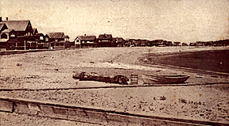

MARIA JANE'S ADVENTURE AND MR. SIMMS'S INCUBUS.

RANDY RANKIN lives over in the "Two mile." Until recently I had supposed that this phrase was a corruption of "turmoil," possibly, and was a way of describing a "thick settled place" that was very busy and noisy. I requested an explanation from Mrs. Marlow, and she informed me that the Two-mile was a shoemaking village, just two miles from the centre of the town; hence its descriptive name.
Randy Rankin is the person who is said to have expressed the opinion that it was n't proper for two women to live alone in a tent with such a kind of a dog as Max. This remark left in doubt the propriety of living with a terrier, or even a Newfoundland, as a companion. Randy has been to make a two days' visit to Mrs. Marlow, and she came to call upon us. We are now thoroughly settled at housekeeping. Our kerosene stove has come, and we are at present in the full and successful tide of boarding ourselves. We have, consequently, not tasted fish, lobster, or clams for several days. As the butcher comes but once a week before the season opens, we have had rather a scrambling time to procure food, and have subsisted mostly on eggs, milk, and crackers. The two women who live on the slope of the hill near us, and who were so interested in our unpacking, have each kindly contributed to our stores, one a loaf of brown bread, the other a sheet of gingerbread. We were twice grateful: first, for the food itself; secondly, that it did not come in the shape of any kind of fish.
Our tent is now very comfortable; we rejoice in our independence, and in our capacity for eating and sleeping. We are even beginning to come out of our purely animal state, and look with eyes that see upon the beauty of our surroundings. It is pleasant to be perched, as we are, so near the ocean as to be almost over it, and to have its various sounds continually in our ears.
The tent faces the east; and when we sit in the door of it of an afternoon, we spend much time in looking at Minot's Light, for that granite shaft is the most prominent object in the wide sweep of waters. Everybody knows the charm of watching the different sails coming and going. The stimulating air is always in our nostrils. We are now having a realizing sense that we are camping out at the shore. Since June has begun to grow toward the middle of its days, we see with our opera-glasses, when we gaze toward the crooked line of coast stretching west, here and there a cottage with open doors and windows. The cottagers are gradually coming, but not until after the Fourth of July will the "season" be really open.
Everybody whom we meet among these simple folk is looking forward with eagerness to the "Fourth," not so much from any patriotic emotions as because in "visitor time" there is something going on. Three quarters of the little gayly painted, piazzaed cottages are thrown open on the anniversary of the Declaration of Independence, and from that time until the first of September there is a chance for these poor women, who seem like prisoners, and who live and toil here the year round, to see glimpses of a life as strange to them as if these gay worldlings came from one of the stars in the heavens. It is not often, it is true, that these labor-laden wives and mothers get down there where the summer houses and the summer people are, but the possibility of going is always before them; and once, at least, in the season, they put on their best gowns, - and pitiably shabby and quaint these gowns are,--and go off by twos and threes, spending hours in strolling about on the beaches in front of the cottages, gazing furtively at the wonderful beings who sit on the verandas, lie in hammocks, and bathe, shrieking, in the cold waters. Sometimes these women carry their dissipation so far as to go to a yellow and vermilion cafe that stands at the head of one of the short beaches, and eat ice cream.
My friend and I had one day walked as far as this cafe, and, being warm with our walk, we were regaling ourselves with cream, and were asking each other why, in such places, the ice-cream almost always tastes so strongly of turpentine, no matter what flavor one chooses. The tide was going out, and the sound of the water, as it forsook the different rocky crevices and gradually pulled back from the shingly shores, was low and musical, growing softer every moment. The day had been very warm; it was the last of June. The sun poured down, and made the water glitter blindingly. Everything bore the look of hope and expectancy which is characteristic of the very beginning of the season at a place of summer resort, even though it be a humble resort. The waiters did not have much to do just now, but they had a very alert manner, and filled orders with ostentatious promptness. All the great windows were open, and the hot air sometimes made the small slips of paper on which the bill of fare was printed sail about tile room on their own account.
Looking up, with a bit of cream on the end of my tin spoon, and wondering exactly how much favoring power tin possessed, I saw a tall figure appear at the broad entrance, and pause an instant. There was an energetic grace in the attitude which seemed familiar to me, but not until she turned her head did I recognize Maria Jane Yates. She was dressed in a rigidly plain black wool dress and a black hat, now pushed back from her head, while the roughened hair was loose on her forehead. There was a dash of color in the shape of a red ribbon at her throat.
"What a splendid woman!" exclaimed my friend, and added instantly, "Why, it's Maria Jane! '
Somebody else evidently agreed with us in our opinion of this new-comer. A gaudily dressed man came out from some place where presumably there was a secret bar. He was red, and he had the peculiar appearance of a person who has "just taken a drink;" not the first one, either. He stood an instant looking at Maria Jane, who seemed to be engaged in scanning the empty tables to see what one she should choose.
He advanced quickly. As he came opposite her in the wide doorway, he suddenly wheeled nearer, threw his arm about her neck, and kissed her. Carlos and I sprang to our feet in amazement. As we did so, Maria Jane turned like a tiger; her eyes streamed fire. She lifted her strong, work hardened hand and the fist shot forth. The man fell like a lump. I had never seen a man knocked down before, and had no idea that the sight brought such a satisfactory feeling with it.
Maria turned, and glared about her as if asking if there were any more. Two or three waiters ran forward. They picked up the man and hustled him out at a side door. It seemed as if they knew of what he was capable, and perhaps they had seen the whole of the incident. We both advanced a step, and the woman's eyes met ours. The moment she saw us she put both hands over her face and began to cry. The proprietor appeared. He saw that we knew this woman who could so easily floor a man. He came quickly to us, and whispered hurriedly:--
"If you know her, take her away. I don't want no fuss. That man she struck has money; she was in the right of it, but he's got money, 'n' I don't want no row in my place. You understand ?"
We understood well enough to feel a great contempt for the anxious man before us.
Mrs. Yates walked out with us into the glare of the sunlight. We went to the beach, now broad from the receding tide. We sat down on a rock, and Carlos unfurled her umbrella. The southwest wind came hotly from the land, but the wet sand and pebbles gave us now and then a whiff of salt odor.
We all sat a few moments in silence. Finally Maria Jane spoke, her face flushing as she did so.
"I d' know nothin' what Marsh would er thought," she said.
"Whatever he had thought," returned Carlos with emphasis, "he couldn't have done any better than you did."
But Maria Jane looked troubled. Her view of the incident was painful.
We said a few comforting words, but we saw she did not listen to them. She was brooding over the solecism in manners which she believed she had committed.
At Last she roused herself, and said, with her great eyes wet, her voice unsteady:
"I ain't likely to forgit how kind you've ben. If it had n't ben for you, now I d' know what I should er done."
We did not know as we had done anything, and we told her so. There was something about this poor, handsome ignorant woman that touched us with sharp pathos. I could hardly meet her lovely eyes with that look of grieving in therm.
We all set out to walk home, following the beaches. My friend and I studiously tried to be gay, and Maria Jane was soon cheerful. When we were within sight of the fishing hamlet, we met Marsh lounging along. After glancing at his wife, he exclaimed in genuine admiration:--
"Seems to me you're handsomer than ever, M'ria Jane; eh?"
"You are not the only one who thinks she is handsome," said I, with a laugh.
Mrs. Yates flushed with pleasure as she looked at her husband. It was plain enough to see that she loved this easy, good-looking, good-for-nothing fellow, who had no idea of working for her or for himself; but who let her support him not caring much about anything or anybody. And yet he was gifted with that mysterious something which made every one who came in contact with him like him.
When we were opposite the Yates home, Marsh mounted the ridge toward it, but his wife walked on a short distance with us. She left us at the foot of the hill on the slope of which our tent stood. Max came lumbering down to greet us. Before she went, she stooped, and as she patted the dog's head she stammered that she knew "'t warn't a bit lady-like to knock a man down, and she almost wished she had jest stood still an' screeched. Only somehow, she did n't think of it till the feller was on the floor."
Having said this, she hurried away.
It is sad to have to record the fact that Cap'n Asel has been confined to his house for two or three days by an attack of rheumatism, which is said to have been brought on by staying out too late one damp night, watching to see what time Mr. Morse would get home with a load of hay from the harbor. Not having seen the Cap'n, we are in entire ignorance of the usual small items concerning the inhabitants of the ridge. We only know that the home at the end of the ma'sh, where we took our meals, has been the scene of great tribulation. Two nights ago, in the dead waist and middle, the household of the Widow Marlow were startled by a cry from the front of the house. This cry was twice repeated before it roused the widow.
"Man on the roof!" were the words, shouted in the same tone generally used to announce that there is a man overboard.
By the time Mrs. Marlow had huddled on a few clothes there was a great pounding at the front door, and now Mrs. Marlow recognized Marsh Yates's voice as he cried out:--
"Don't be scart, Miss Marlow, but there's a man on the roof. I thought ye might like ter know it."
Certainly it must always be well to know when there is a man on the roof. Mrs. Marlow hastened to unfasten the door, and as she flung it open she cried out:--
"Oh, do, Marsh, go up and git him down!" "Ye don't calkilate I c'n shin up the side of a house, do ye?" responded Marsh, who had been playing "high - low - Jack" somewhere, and had been a good while in starting for home.
"I don't care how ye git up," said Mrs. Marlow; "only jest git up 'n' shoo him down."
She spoke, in her haste, as if she were referring to some kind of a fowl.
While this parleying was going on another actor appeared on the scene. This was Mrs. Waters, with an immense blanket shawl trailing on the floor behind her, and a shade hat on her head.
"Oh, my brother!" she exclaimed, endeavoring to wring her hands and hold up her shawl at the same time.
Mrs. Marlow was tried.
"Can't ye let your brother alone?" she asked sharply." There's a man on the roof, 'n' we are tryin' to git him down."
"On the roof !" repeated Mrs. Waters wildly." It's my brother, then,--it's Thomas! He has an incubus! Oh, get him down! Somebody!"
Marsh lurched up a little nearer.
"A incubus?" he said, with great interest."Has he got one? Has he got it with him?"
"He isn't in his room," went on Mrs. Waters. "Oh, why does n't somebody do something?"
Marsh gently seized the lady by the arm, and walked her out so that a good view of the roof might be obtained. It was so late that the waning moon was up, and gave light enough to reveal distinctly the figure of a man dressed in a long white night-robe, and standing looking about him, with one hand on the chimney.
"Is that your brother?" asked Marsh.
"Yes," said Mrs. Waters in a whisper.
"You c'n be easy 'bout the incubus," said Marsh in the same tone; "ye see he ain't got a solitary thing with him."
For five minutes there was bewilderment and indecision. As she became more calm, Mrs. Waters was afraid to have anything done, for fear of startling her brother. Before she could think of any move to make Mr. Thomas Simms started somewhat, as if from a trance, clung tightly to the chimney, and then Mrs. Marlow spoke up promptly:
"You must have gone up through the skylight, Mr. Simms, 'n' you'd better come down the same way."
"I shall fall," quavered the man on the roof.
"I guess I c'n see my way now," said Marsh.
He slipped off his shoes,--he wore no stockings,--and was immediately conducted up two 'flights of stairs by Mrs. Marlow, closely followed by Mrs. Waters. Marsh's movements resembled those of a cat as he went on his bare feet along the roof, and soon conducted Mr. Simms, now thoroughly awake, back to his room, where he was carefully ministered to by his sister, who announced that fried clams must have been the original cause of this particular incubus.
Marsh Yates, as he put on his shoes, told Mrs. Marlow that he 'd no idea that the old chap was such a frisky kind of a feller. He recommended that the skylight be kept locked after this; and he congratulated himself that he had stopped to play that last game of high-low, for if he had n't 't would be hard tellin' what would have been the end of them high - jinks that Mr. Simms was at.
It would be hardly possible to tell how much we have all talked about this incident. We have discussed it in all its bearings; then have immediately begun and gone all over it again with infinite interest. Each of the women on the hill has been to call on us, and talked of it; then they have come in a body, and conversed on this subject; Mr. Morse has called, and gone over every minutest phase. We have really that Cap'n Asel has been deprived of this happiness. Maria Jane Yates concluded her remarks by "guessing that Mr. Simms was a plaguey fussy old thing, and it would have been no great loss if he 'd broken his neck, as he would have done if it had n't ben for Marsh." She was plainly proud of Marsh's connection with the affair.
It was Randy Rankin who first told us about the adventure and rescue of Mr. Simms. She came over from the Two-mile early on the third day after; the butcher gave her a lift, and she walked the rest of the way. She told the story with even more full particulars than I have given, narrating explicitly each remark made the next day by all who had the privilege of hearing the recital. Mr. Simms did not appear at breakfast, the meal following his escapade, but he had "fully a peck" of flannel cakes sent up to him. I am quoting Randy Rankin, who has taken high ground about this boarder of the Widow Marlow's. She says that he is not sick at all, but assumes to be ill so that he "may git more victuals and better victuals than anybody else." Furthermore, she says Mr. Simms reminds her of Mr. Rankin.
It did not require an acquaintance of many hours for us to learn that any one who was irritating or aggravating in any way, who had marked faults of any kind, reminded Mr. Rankin's wife of Mr. Rankin.
Randy does not live with her husband. She is not divorced from him, but the separation has now continued for many years, and is considered a fixed fact. They are both perfectly respectable people. Cap'n Asel told us that "Randy she had ways, and Mr. Rankin he had ways, and somehow them ways did n't jibe as they 'd oughter." The result, after twenty-five years of trial, is that Randy lives at the Two-mile, and her husband dwells by himself in an old schoolhouse at the farther end of the town.
Randy does slop-work a good deal; in summer she picks huckleberries. She has that Cap'n Asel has been deprived of this happiness. Maria Jane Yates concluded her remarks by "guessing that Mr. Simms was a plaguey fussy old thing, and it would have been no great loss if he 'd broken his neck, as he would have done if it had n't ben for Marsh." She was plainly proud of Marsh's connection with the affair.
It was Randy Rankin who first told us about the adventure and rescue of Mr. Simms. She came over from the Two-mile early on the third day after; the butcher gave her a lift, and she walked the rest of the way. She told the story with even more full particulars than I have given, narrating explicitly each remark made the next day by all who had the privilege of hearing the recital. Mr. Simms did not appear at breakfast, the meal following his escapade, but he had "fully a peck" of flannel cakes sent up to him. I am quoting Randy Rankin, who has taken high ground about this boarder of the Widow Marlow's. She says that he is not sick at all, but assumes to be ill so that he" may git more victuals and better victuals than anybody else." Furthermore, she says Mr. Simms reminds her of Mr. Rankin.
It did not require an acquaintance of many hours for us to learn that any one who was irritating or aggravating in any way, who had marked faults of any kind, reminded Mr. Rankin's wife of Mr. Rankin.
Randy does not live with her husband. She is not divorced from him, but the separation has now continued for many years, and is considered a fixed fact. They are both perfectly respectable people. Cap'n Asel told us that "Randy she had ways, and Mr. Rankin he had ways, and somehow them ways did n't jibe as they 'd oughter." The result, after twenty-five years of trial, is that Randy lives at the Two-mile, and her husband dwells by himself in an old schoolhouse at the farther end of the town.
Randy does slop-work a good deal; in summer she picks huckleberries. She has a certain knack at dressmaking, and works at stated intervals for families who do not pretend to be stylish. She is phenomenally tall; is what is called raw-boned to the last degree. Her face is disfigured by a large mole on the left cheek, and she has a beard. Notwithstanding that this description is correct, there is something in her face that prevents it from being repulsive, and she has a shrewd and humorous sense that shines out of her deep-set eyes. She refers to her husband with great frequency and fullness. The first time she called she announced that she "had been so sort of curious to see two women who took a notion they could live in a tent, that she made up her mind she would come over next butcher's day, if 't wa'n't for nothin' but to see us. She had thought, if we were young and pretty, t wa'n't exactly proper, and she may have said as much. But now"-- When she reached this point she looked at us, and significantly paused.
The silence continued for several moments, and was getting somewhat embarrassing. I rose, and crossed the floor of the tent to a stand where stood a pitcher of lemonade and glasses. I offered her a glass of the beverage. As I moved, my slippers, which are very old and loose as to the heels, made a clattering.
"Them shoes o' yourn makes me think o' Mr. Rankin," said our caller, as she sipped her drink. "D' ye ever hear why I happened to leave him?"
We said we had heard a great many reasons, but feared we had never heard the true one.
"It was partly on account of slippers, let folks say what they will," she answered. And she began to give us the particulars.
The editors of this World Wide Web edition of Maria Louise Pool's work are interested in hearing from the readers. Your response and comments will be useful in making future decisions on expanding the selections offered. Please e-mail carlos@burrows.com.
 J.R.
Burrows & Company
J.R.
Burrows & Company
P.O. Box 522
Rockland, Massachusetts 02370
E-mail:
merchant@burrows.com
Phone: (800) 347-1795; Phone: (781) 982-1812 Fax: (781) 982-1636